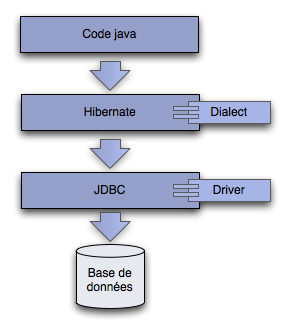

Hibernate est un framework de persitence objet - base de données relationnelles.
Il implémente et étend JPA (Java Persitance API), le standard de persistence jee.
Techniquement, c'est une surcouche de JDBC qui en simplifie grandement l'usage.
Comme pour la configuration de derby, nous allons écrire un test unitaire afin de mettre en place notre couche de persistance.
Nous créons un test HibernateTest dans le package edu.ecm.blog.hibernate.
@Test
public void createSessionFactory() {
Configuration configuration = new Configuration();
configuration.setProperty("hibernate.dialect", "org.hibernate.dialect.DerbyDialect");
configuration.setProperty("hibernate.connection.url", "jdbc:derby:target/testdb;create=true");
configuration.setProperty("hibernate.connection.driver_class", "org.apache.derby.jdbc.EmbeddedDriver");
configuration.setProperty("hibernate.hbm2ddl.auto", "create-drop");
SessionFactory sessionFactory = configuration.buildSessionFactory();
}
C'est l'équivalent de la création de la connexion en JDBC.
Le guide complet de la configuration de hibernate
Ce test ne passe que si on ajoute les entrées suivantes dans le pom.xml
<dependency> <groupId>org.hibernate</groupId> <artifactId>hibernate-core</artifactId> <version>3.6.4.Final</version> <scope>compile</scope> </dependency> <dependency> <groupId>javassist</groupId> <artifactId>javassist</artifactId> <version>3.12.1.GA</version> <scope>compile</scope> </dependency> <dependency> <groupId>org.slf4j</groupId> <artifactId>slf4j-simple</artifactId> <version>1.6.1</version> <scope>compile</scope> </dependency>
Ce test génère pas mal de traces dans la console au démarrage d'hibernate.
La SessionFactory que l'on récupère est un wrapper autour des APIs JDBC.
Elle permet de récupérer une Session qui est le pendant d'une Connection JDBC.
Avant de pouvoir utliser concrètement notre SessionFactory, il faut lui donner la configuration des classes que l'on veut persiter.
La façon la plus simple est de le faire via des annotations dans nos classes du domaine.
On ajoute les annotations @Entity, @Table, @Column et @ManyToOne.
@Entity
@Table(name = "author")
public class Author {
@Column
private String name;
@Column
private String email;
...
}
@Entity
@Table(name = "post")
public class Post {
@Column
private String title;
@Column
@Temporal(TemporalType.TIMESTAMP)
private Date date;
@Column
private String slug;
@ManyToOne(optional = true)
private Author author;
@Column(length = 4000)
private String text;
@Column
private String tags;
...
}
Il est aussi possible de tout configurer (hibernate et objets du domaine) via fichiers xml mais cela est beaucoup plus verbeux.
Il ne reste qu'à informer hibernate de la présence de nos beans annotés.
configuration.addAnnotatedClass(Author.class); configuration.addAnnotatedClass(Post.class);
Une exécution en l'état nous indique que :
org.hibernate.AnnotationException: No identifier specified for entity: edu.ecm.blog.domain.Author at org.hibernate.cfg.InheritanceState.determineDefaultAccessType(InheritanceState.java:268) at org.hibernate.cfg.InheritanceState.getElementsToProcess(InheritanceState.java:223) at org.hibernate.cfg.AnnotationBinder.bindClass(AnnotationBinder.java:686) at org.hibernate.cfg.Configuration$MetadataSourceQueue.processAnnotatedClassesQueue(Configuration.java:4035) at org.hibernate.cfg.Configuration$MetadataSourceQueue.processMetadata(Configuration.java:3989) at org.hibernate.cfg.Configuration.secondPassCompile(Configuration.java:1398) at org.hibernate.cfg.Configuration.buildSessionFactory(Configuration.java:1856) at edu.ecm.blog.hibernate.HibernateTest.createSessionFactory(HibernateTest.java:23) at sun.reflect.NativeMethodAccessorImpl.invoke0(Native Method) at sun.reflect.NativeMethodAccessorImpl.invoke(NativeMethodAccessorImpl.java:39) at sun.reflect.DelegatingMethodAccessorImpl.invoke(DelegatingMethodAccessorImpl.java:25) at java.lang.reflect.Method.invoke(Method.java:597) at org.junit.runners.model.FrameworkMethod$1.runReflectiveCall(FrameworkMethod.java:44) at org.junit.internal.runners.model.ReflectiveCallable.run(ReflectiveCallable.java:15) at org.junit.runners.model.FrameworkMethod.invokeExplosively(FrameworkMethod.java:41) at org.junit.internal.runners.statements.InvokeMethod.evaluate(InvokeMethod.java:20) at org.junit.runners.BlockJUnit4ClassRunner.runNotIgnored(BlockJUnit4ClassRunner.java:79) at org.junit.runners.BlockJUnit4ClassRunner.runChild(BlockJUnit4ClassRunner.java:71) at org.junit.runners.BlockJUnit4ClassRunner.runChild(BlockJUnit4ClassRunner.java:49) at org.junit.runners.ParentRunner$3.run(ParentRunner.java:193) at org.junit.runners.ParentRunner$1.schedule(ParentRunner.java:52) at org.junit.runners.ParentRunner.runChildren(ParentRunner.java:191) at org.junit.runners.ParentRunner.access$000(ParentRunner.java:42) at org.junit.runners.ParentRunner$2.evaluate(ParentRunner.java:184) at org.junit.runners.ParentRunner.run(ParentRunner.java:236) at org.eclipse.jdt.internal.junit4.runner.JUnit4TestReference.run(JUnit4TestReference.java:49) at org.eclipse.jdt.internal.junit.runner.TestExecution.run(TestExecution.java:38) at org.eclipse.jdt.internal.junit.runner.RemoteTestRunner.runTests(RemoteTestRunner.java:467) at org.eclipse.jdt.internal.junit.runner.RemoteTestRunner.runTests(RemoteTestRunner.java:683) at org.eclipse.jdt.internal.junit.runner.RemoteTestRunner.run(RemoteTestRunner.java:390) at org.eclipse.jdt.internal.junit.runner.RemoteTestRunner.main(RemoteTestRunner.java:197)
Pour corriger cette erreur, il suffit de rajouter un identifiant unique dans chaque classe.
@Id
@GeneratedValue(strategy = GenerationType.AUTO)
private Long id;
public Long getId() {
return id;
}
public void setId(Long id) {
this.id = id;
}
Cet identifiant servira de clé primaire dans la base de données.
Il utilise une stratégie de génération automatique : hibernate demandera à la base de générer des identifiants quand il en aura besoin.
Désormais, ce test unitaire passe.
Afin de voir ce que peut faire hibernate, nous allons persister un Author. On ajoute le test suivant.
@Test
public void saveAuthor() {
Author author = new Author();
author.setName("Harpo Marx");
author.setEmail("harpo.marx@gmail.com");
Session session = sessionFactory.openSession();
session.save(author);
session.close();
}
Afin de pouvoir écrire ce test il faut avoir passé le test précédent (createSessionFactory) en @Before au lieu de @Test afin d'initialiser la SessionFactory.
Hibernate nous permet donc de sauver un objet dans une table sans que nous ayons à manipuler de SQL.
De même que pour les tests jdbc, nous ne fermons pas correctement notre Session si jamais une erreur survient.
Comme nous somme dans du code de test, cela est suffisant pour le moment.
Malgré cela, nous devons quand même bien nettoyer la base après notre test et fermer la SessionFactory.
@After
public void cleanDb() {
Session session = sessionFactory.openSession();
Transaction transaction = session.beginTransaction();
session.createQuery("delete from Author").executeUpdate();
transaction.commit();
session.close();
sessionFactory.close();
}
La transaction ici permet à hibernate de bien valider la modification en base pour cette opération dite "bulk" (en masse).
Rechercher un objet dans la base se fait tout aussi simplement que la persistence.
Pour les requêtes, hibernate utilise un language proche du SQL : le HQL (Hibernate Query Language).
Le HQL permet de travailler avec le nom des attributs des classes au lieu du nom des colonnes en base.
@Test
public void findAuthor() {
saveAuthor();
Session session = sessionFactory.openSession();
Query query = session.createQuery("from Author where name = :name");
query.setString("name", "Harpo Marx");
List<Author> authors = query.list();
session.close();
Assert.assertEquals(1, authors.size());
Assert.assertEquals("Harpo Marx", authors.get(0).getName());
}
Avec hibernate on récupère directement nos objets à partir de la base (au lieu d'un ResultSet).
En plus du HQL, il existe une autre API encore plus orientée objet : la Criteria API
@Test
public void findAuthorCriteria() {
saveAuthor();
Session session = sessionFactory.openSession();
Criteria criteria = session.createCriteria(Author.class);
criteria.add(Restrictions.eq("name", "Harpo Marx"));
List<Author> authors = criteria.list();
session.close();
Assert.assertEquals(1, authors.size());
Assert.assertEquals("Harpo Marx", authors.get(0).getName());
}
Ces 2 APIs sont disponibles en fonction du besoin.
Avec hibernate nous allons pouvoir écrire simplement notre service de gestion de billets.
Les opérations à supporter sont :
On crée donc la classe PostService dans edu.ecm.blog.service.
public class PostService {
public void save(Post post) {
// TODO
}
public void delete(Long id) {
// TODO
}
public List<Post> find(int pageIndex, int pageSize) {
// TODO
}
public int count() {
// TODO
}
}
Afin d'implémenter ces méthodes, nous allons utiliser une classe de test, PostServiceTest, dans le package edu.ecm.blog.service du répertoire src/test/java.
public class PostServiceTest {
private SessionFactory sessionFactory;
@Before
public void createSessionFactory() {
Configuration configuration = new Configuration();
configuration.setProperty("hibernate.dialect", "org.hibernate.dialect.DerbyDialect");
configuration.setProperty("hibernate.connection.url", "jdbc:derby:target/testdb;create=true");
configuration.setProperty("hibernate.connection.driver_class", "org.apache.derby.jdbc.EmbeddedDriver");
configuration.setProperty("hibernate.hbm2ddl.auto", "create-drop");
configuration.addAnnotatedClass(Author.class);
configuration.addAnnotatedClass(Post.class);
sessionFactory = configuration.buildSessionFactory();
}
@After
public void cleanDb() {
Session session = sessionFactory.openSession();
Transaction transaction = session.beginTransaction();
session.createQuery("delete from Post").executeUpdate();
transaction.commit();
session.close();
sessionFactory.close();
}
@Test
public void save() {
}
}
Et nous commençons par la méthode save. Nous souhaiterions pouvoir écrire :
@Test
public void save() {
PostService postService = new PostService();
postService.setSessionFactory(sessionFactory);
Post post = new Post();
post.setTitle("un post");
post.setDate(new Date());
postService.save(post);
}
Faites en sorte que cela soit possible et que ce test passe en prenant soin de bien fermer la session.
Le delete (doc hibernate).
@Test
public void delete() {
PostService postService = new PostService();
postService.setSessionFactory(sessionFactory);
Post post = new Post();
post.setTitle("un post");
post.setDate(new Date());
postService.save(post);
postService.delete(post.getId());
Session session = sessionFactory.openSession();
Assert.assertEquals(0, session.createQuery("from Post").list().size());
session.close();
}
Le find avec la criteria API
@Test
public void find() {
PostService postService = new PostService();
postService.setSessionFactory(sessionFactory);
Post post = new Post();
post.setTitle("un post");
post.setDate(new Date());
postService.save(post);
post = new Post();
post.setTitle("un post");
post.setDate(new Date());
postService.save(post);
Assert.assertEquals(2, postService.find(0, 10).size());
Assert.assertEquals(1, postService.find(0, 1).size());
Assert.assertEquals(0, postService.find(1, 10).size());
}
Et le count
@Test
public void count() {
PostService postService = new PostService();
postService.setSessionFactory(sessionFactory);
Post post = new Post();
post.setTitle("un post");
post.setDate(new Date());
postService.save(post);
post = new Post();
post.setTitle("un post");
post.setDate(new Date());
postService.save(post);
Assert.assertEquals(2, postService.count());
}
Après ce test, notre service est donc suffisament opérationnel pour le moment.
Cependant, nous avons beaucoup de duplication de code dans nos tests unitaires et le code reste assez verbeux.
Sans casser les tests, il serait possible de grandement simplifier ce code.
Tout ce que nous avons écrit aurait été très verbeux en SQL.
Hibernate est une aide précieuse lorsque l'on travaille avec des objets et une base de données relationelles.
Mais notre code a encore quelques limitations :
Avant de coder un second service, nous allons nous tourner vers le framework spring afin de régler tous ces problèmes.